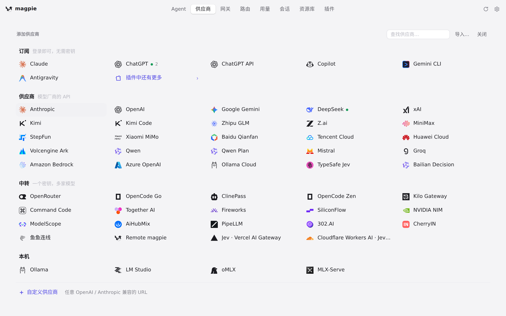
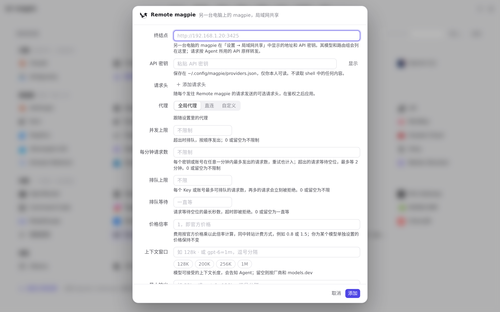

#1282 界面预览
commit 4e85e92 · 回到 PR · 远程 magpie 的 System One 地址现在从它唯一的对话地址推导：供应商编辑器里不再单独出现 Jev/System One 终结点输入框，且编辑器会收到一份显式的决策模型列表（可以为空），不再按模型名字去猜。
红线是鼠标走过的轨迹，红色圆环是一次点击；底部文字是这一步在做什么。空格暂停，← → 逐段查看。

远程 magpie 的编辑表单 · 「添加供应商」里的预设列表

远程 magpie 的编辑表单 · 远程 magpie 的编辑表单：地址与 API 密钥